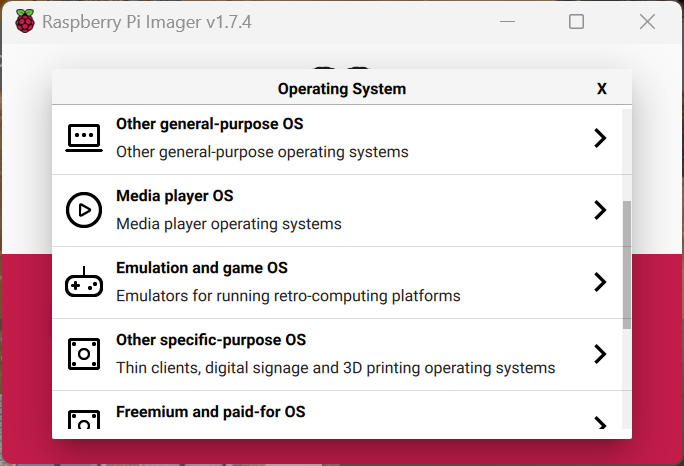
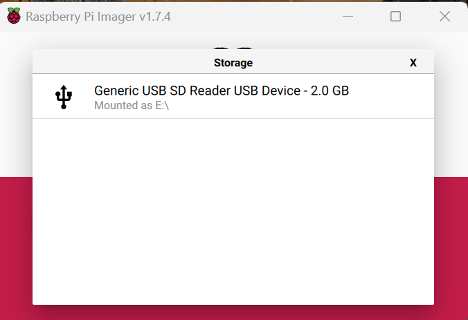
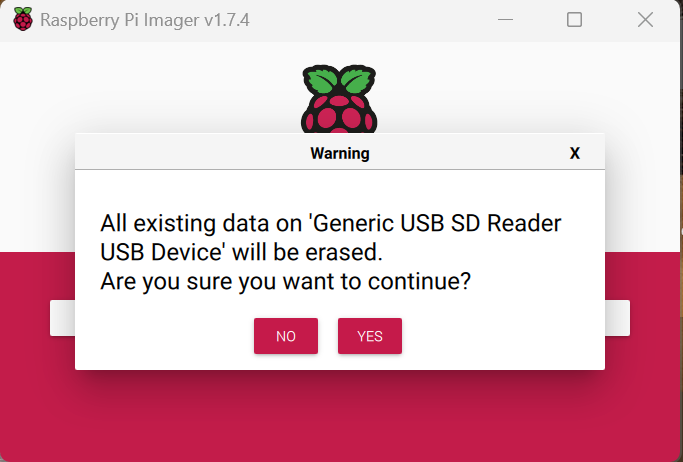

Step 1 – Installing Volumio
What you’re doing
To set up your FM4 Quadify system, you’ll need to install Volumio — a dedicated music player operating system designed for the Raspberry Pi.
This step covers downloading Volumio and flashing it to a microSD card using the official Raspberry Pi Imager.
What you’ll need
- Raspberry Pi
- MicroSD card
- MicroSD card reader (USB adapter or built-in)
- PC or laptop with internet access
- Raspberry Pi Imager
Step 1: Download Raspberry Pi Imager

-
Visit the Raspberry Pi software page:
https://www.raspberrypi.com/software/ - Download the Raspberry Pi Imager for your operating system (Windows, macOS, or Linux)
- Install and launch the Raspberry Pi Imager
Step 2: Insert the SD card
Insert your microSD card into your computer using either a built-in SD card slot or a USB card reader.
Step 3: Select the operating system
- Open Raspberry Pi Imager
- Click Choose OS
- Select Media Player OS
- Choose Volumio from the list
Step 4: Choose the target storage
Click Choose Storage and select the microSD card you inserted earlier.
Make sure you select the correct card — all data on the selected card will be erased.
Step 5: Write the image
Click Write to begin flashing Volumio to the SD card. This process may take a few minutes.
Step 6: Eject the SD card
Once the process has completed, safely eject the microSD card from your computer.
You’re now ready to insert the SD card into your Raspberry Pi and continue with the next setup step.